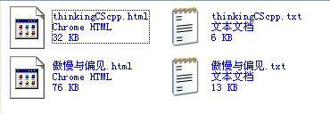

F.A.Qs
Q:
如何从“谷歌金山词霸”中导出生词本
Q:
如何将导出的生词本添加进来
Q:
如何将误加的文件从列表中删除
Q:
转换好的文件在哪里
Q:
我希望输出的文件直接覆盖以前的旧文件
Q:
如何让文件自动生成到指定的目录下
Q:
如何让多个文件导出成一张网页
Q:
如何导出卡片风格
Q:
如何在IE6.0等低版本的浏览器里浏览
A:
- 打开“谷歌金山词霸”生词本
- 点击“生词本管理”
- 选中你要导出的生词本
- 点击“导出”
- 选择“导出生词本备份”
- 选择目录
- 点击确定

A:
- 启动Pig
- 点击"+"，或按菜单“文件”-“添加”，或快捷键(Ctrl+I)
- 选择要转换的文件（可多选）
- 点击打开

A:
在列表中选中要删除的文件名。
点击"-"，或按菜单“文件”-“删除”，或快捷键(Ctrl+R)。
提示：按住Ctrl或Shift可选择多个文件。
A:
导出的文件就和原来的txt文件在同一个目录，相同的名字，扩展名为html。
如果原目录下有重名文件，则自动在后面添加数字，不会覆盖原文件。

A:
点击菜单“选项”-“设置”。
选中“覆盖已存在的文件”。
保存设置。

A:
点击菜单“选项”-“设置”。
选中“设置输出路径”。
点击按钮“...”选择输出的目录。
保存设置。

A:
点击菜单“选项”-“设置”。
选中“设置输出路径”。
选中“保存成单个文件”(words.html)。
保存设置。
小提示：该文件名是word.html。

A:
点击菜单选项->排版。
在样式中选择“卡片”。
保存设置。

A:
点击菜单选项->排版。
在格式中选择“图片”。
保存设置。

ZJGSU redraiment
Pig [梦婷轩]